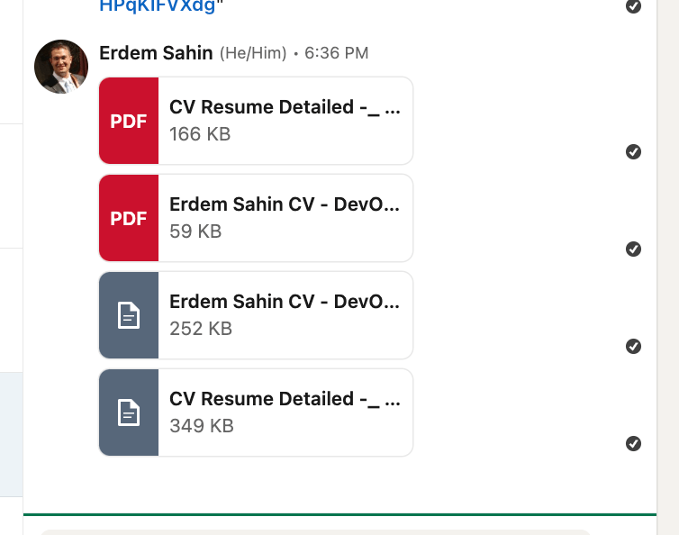

Why I Send My CV in Multiple Formats: PDF, Word, and Varied Lengths

When applying for jobs, it’s important to make a great first impression, and your CV is often the first thing a potential employer sees. To maximize my chances, I send my CV in multiple formats—PDF, Word, and in both short and long versions. Here’s why this approach can make a difference:
1. Catering to Different Preferences
Different recruiters and companies have different preferences. Some may prefer a PDF for its consistent formatting across all devices, ensuring that my CV looks the same no matter who opens it. Others might prefer a Word document because it’s easier to annotate or adjust. By providing both formats, I cater to everyone’s needs, showing that I am both flexible and considerate.
2. Ensuring Compatibility Across Platforms
Not all recruitment software or systems handle file formats the same way. Some might struggle with PDFs, especially when parsing text for keyword matching, while others might misinterpret Word formatting. By sending both formats, I ensure that my CV is readable and usable no matter the system or software used by the company.
3. Highlighting Key Information Efficiently
Sometimes, recruiters need a quick overview of my skills and experience. A shorter CV, typically one page, provides a concise snapshot of my qualifications, focusing on key achievements and relevant experiences. This is perfect for quick scans or initial screenings. On the other hand, a longer version offers a more comprehensive view of my career, perfect for in-depth reviews or for roles requiring detailed experience.
4. Adapting to Different Stages of the Hiring Process
The hiring process often involves multiple stages, from initial screening to detailed interviews. In early stages, a short CV helps recruiters quickly gauge whether I’m a good fit. As I progress to later stages, a longer, more detailed CV can provide the depth needed for more serious consideration and discussions.
5. Demonstrating Professionalism and Preparedness
Sending multiple versions of my CV demonstrates that I am prepared and professional. It shows that I’ve taken the time to consider the needs of the recruiter or hiring manager. This level of attention to detail can set me apart from other candidates who only send a single version.
6. Maximizing Opportunities for Customization
Different job applications often require emphasizing different aspects of my experience. Having both short and long versions allows me to easily tailor my CV to the specific job, highlighting the most relevant skills and experiences for each application. This approach shows that I am not only detail-oriented but also deeply interested in the specific role.
7. Enhancing Accessibility and Inclusivity
By providing multiple formats, I make my CV more accessible to all recruiters, including those who may use screen readers or other assistive technologies. It’s a small step toward inclusivity that can make a big difference in ensuring my CV is seen and considered by all.
Conclusion:
Sending my CV in multiple formats—PDF, Word, short, and long versions—is more than just a strategy; it’s about maximizing my chances of success by being adaptable, considerate, and thorough. This approach ensures that I meet the needs of all recruiters and stand out as a well-prepared and thoughtful candidate.
By taking these extra steps, I demonstrate a proactive approach to job searching, showcasing my flexibility and attention to detail—traits that any potential employer would value.
This blog post should effectively convey the benefits of sending CVs in multiple formats and lengths, providing a clear rationale that readers can understand and potentially apply to their own job search strategies.
if interested in becoming an IT Contractor > https://www.udemy.com/course/become-an-ultimate-it-contractor
Imported from rifaterdemsahin.com · 2024